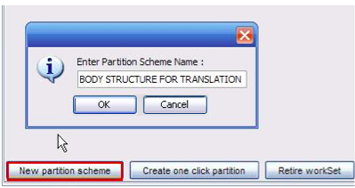
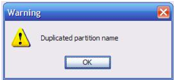
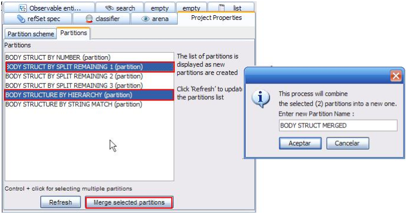
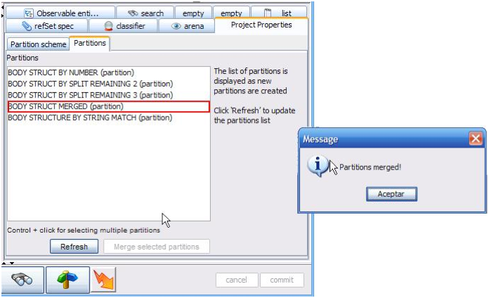

Workset partitioning
- Select “Open Project Manager” from the upper left menu and open your translation
project. Open your Worksets folder and select a workset.
- The workset details will be displayed in the right panel. You will find that the source
refset, the exclusion refsets and members were already defined. Now you must create your
partition schemes according to your needs.
• Open the Partition Schemes tab and click “New partition scheme”. A new window is displayed
requesting for a partition scheme name. Write a name and press OK:

- You will not be able to create two partitions with the same name. if you try to do so,
the following message will appear:

- Select your new partition scheme in the left panel. The details of this partition scheme
will be opened on the right panel.
Partition merging
- In this pane, you may also select multiple partitions (control + click) in the
Partitions tab and merge them by clicking “Merge selected partitions” button:
- The new partition resulting from merging will be displayed in the Partitions list:

